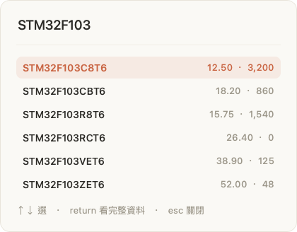
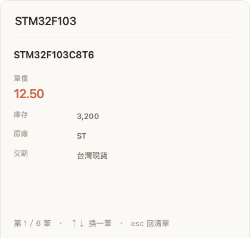

複製料號、按一組快捷鍵，答案就在眼前。 價格、庫存、交期一起出來，不用切視窗，也不用寫 VLOOKUP。
測試版免費，可以用到 2026-09-12 · 不用裝 Python ·
⚠︎ 兩個系統第一次打開都會被擋下來 —— 先看這裡怎麼過
一天查 20 次，一個月就是 將近 5 個小時。
這兩個數字是實際操作的體感。程式內部的查詢是 0.94 毫秒（15 萬筆），這個有量過。
01
在 Outlook、Chrome、LINE、ERP 裡都能按 —— 它不挑軟體。 查料號的時候你正在寫信、正在看 BOM，任何「切出去」的動作都會打斷你。

打字的當下就在找
02
這就是 VLOOKUP 在做的事 —— 用同一個料號欄去別的檔案撈欄位。 差別是 VLOOKUP 一條公式只撈得回一欄，六欄就要寫六條。
#REF!
選一筆看完整資料
順帶一提：stm32f103c8t6、STM32-F103 C8T6、
ＳＴＭ32Ｆ103Ｃ8Ｔ6 在 Excel 裡是三個不同的字串，VLOOKUP 會給你
#N/A。在這裡它們是同一顆料。Excel 把 1234 讀成
1234.0 的那種也一樣對得上。
它只做一件事：你給一個代號，它把那一列的其他欄位吐出來。 那個代號叫什麼，它沒有意見。
判斷標準很簡單：你手上有一張 Excel，而且你會反覆查同一欄 —— 那它就有用。做這個工具是因為我自己在查料號，所以整頁都在講料號， 但程式裡沒有任何一行是為電子零件寫的。
這是公司資料，所以它從一開始就沒有連網的能力。 不用註冊、沒有雲端、沒有後端，也不記錄你查了什麼。 你的 Excel 只是被讀進記憶體，如此而已。
兩關都會過，但沒人先告訴你的話，第一關就會讓你以為程式壞了。
先講結論：這不是病毒，也不是程式有問題。 是因為我沒有買數位簽章（Apple 一年 US$99、Windows 一年 US$200）。 系統對沒簽章的程式一律先擋，跟程式本身無關。
跳出這個視窗，只有兩個按鈕，看起來像是只能放棄
找不到「仍要打開」怎麼辦？ 它只會在你剛剛試著打開 App 之後的一小時內出現。超過就消失了 —— 回去再雙擊一次 App，被擋之後馬上回來這裡看，就會有了。
下載到的是一個 zip，直接在裡面點會失敗
資料夾裡還有一個 app-files 和一個
PN Anywhere-打不開時點這個.exe。
平常都不用理它們 —— 前者是程式本體的零件，後者只在
「點了正常版完全沒反應」的時候才用得到，它會開一個黑色視窗把
卡在哪一步印出來。
程式開起來了，但按快捷鍵什麼都沒發生
為什麼一定要拖進「應用程式」？
放在「下載項目」裡直接開的話，macOS 每次會從一個隨機的暫存路徑執行它，
權限打勾了下次開又不算數 —— 這是最多人卡住的一關，而且完全看不出原因。
更新到新版之後突然又不動了？回到「輔助使用」，把舊的那筆
選起來按「−」移除（不是關掉開關），再重新授權一次。
快捷鍵撞到別的軟體？「設定快捷鍵」可以換一組，
按「試按看看」會當場請你按一次，有反應才存。
找不到那顆晶片圖示？沒關係，不用找
這是一個常駐在背景的工具，設定都掛在
macOS 右上角的選單列／Windows 右下角的工作列那顆圖示上。
但那顆圖示不一定看得到 ——
Mac 的螢幕上方位置不夠時，圖示會被瀏海吃掉直接消失；
Windows 則是被收進「^」裡面。
所以不用去找它。任何時候再打開一次 PN Anywhere，
就會跳出一個小視窗，告訴你程式在不在跑、資料進來了沒、
現在的快捷鍵是什麼，
匯入 Excel、設定快捷鍵全都在上面。
關掉那個視窗不會關掉程式，它會繼續在背景待命。
下載、解壓、匯入你的價格表。三分鐘。